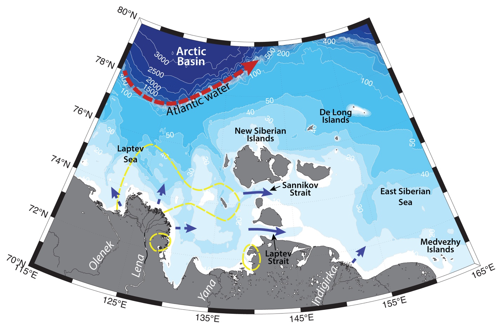

Schematic water circulation patterns and geographical place names in the Lena Delta region. Dashed line marks the studied region.
The region consists of the Lena Delta and surrounding shallow shelf of 20 - 30 m depth. Its hydrography is determined by the Lena plume, its volume and dynamics, seasonal land fast ice, Lena polynya, and coastal upwelling. Waters of the region are prone to large variability on different scales under the influence of atmospheric forcing.
Lena River contributes large volume of freshwater discharge into Laptev Sea (estimates from 530 to 800 km3 annualy; e.g. Carmack, 2000; Guay et al., 2001; Janout et al., 2015). The majority of this discharge inflows to the sea during ice-free period in June-September. The river forms a fresh (S<~20) surface (10-20 m deep) layer over a wide area in the sea, which influences geochemical and biological processes in the region (e.g. it carries nutrients, which enhance productivity; e.g. Gordeev et al., 1996). Fresh Lena plume is underlaid by saltier oceanic waters (S = ~33.5 – 34). During summer/fall the plume can be warmed up to 4 – 8 °С and freshen the sea all the way northwards to the shelf break, but its position is prone to synoptic variability under the influence of atmospheric forcing. The main branches of Lena plume inflow into the Laptev Sea on a distance of 350-400 km from Laptev and Sannikov straits. Spread out over large area to the north from the river delta the plume is thought to be usually advected eastwards into the East-Siberian Sea, governed by eastward Ekman transport, but strong northerly winds can slacken this flow (Dmitrenko et al., 2010b; Osadchiev et al., submitted).
Many studies have addressed the redistribution of surface waters due to atmospheric forcing in the Siberian seas (e.g. Shpaikher et al., 1972; Dmitrenko et al., 2005a; Dmitrenko et al., 2008, 2010b; Saveleva et al., 2008). In general, it is believed, that with high pressure and anticyclonic circulation dominating in the central Arctic there is a northward, and in some cases – westward, propagation of river plumes, and cyclonic circulation causes eastward flow along the coastline.
In the absence of strong wind forcing an eastward baroclinic flow is induced along the shores of Siberia by the Coriolis force and large salinity gradient between river plumes and ambient shelf water (e.g. Williams and Carmack, 2015). Lena discharge is thought to contribute to the formation of Siberian Coastal Current (SCC) – fresh and typically cold water (𝑆 < 30; known in the Chukchi Sea as “Siberian Coastal Water”) flowing eastwards along the coast towards Bering Strait (e.g. Weingartner et al., 1999; Semiletov et al., 2005; Anderson et al., 2011; Pisareva et al., 2015a,b). Carmack with coauthors (Carmack et al., 2015) suggest that SCC is the Eurasian branch of the Riverine Coastal Domain (RCD) – a narrow (~<15km), shallow (~10m) contiguous feature, extending clockwise along the Arctic shores and driven by an aggregation of continental runoff.
Coastal wind-driven upwellings are common near the Lena Delta during ice-free periods. The persistent upwelling-favorable southeasterly winds (for 4-5 days) can cause an upward flow of the area of 15000-17000 km2 near the delta. Upwelling events enhance mixing of the Lena River water with underlaying cold saline waters, as well as surrounding sea. They strongly affect ecosystem by redistributing nutrients, freshwater, heat and sediments, changing the stratification and driving river water away from the shore. (e.g. Pisareva et al., 2019; Osadchiev et al., 2020)
Tides in the Laptev Sea are generally low, dominated by a lunar semidiurnal tidal wave that propagates from the North Atlantic to the Arctic Ocean. The Lena Delta consists of many river branches, that slacken the tidal wave, so that tides don’t exceed 0.5 m in the coastal region and don’t get into the mouth of the river (e.g. Fofonova et al., 2014, 2015). Wind-induced water level fluctuations are common in this area.
Land fast ice begins to freeze up in the Lena region at the end of September. In winter it can be up to 2 m thick, stretched until the 20-25 m isobath. At the end of land fast ice, Anabar Lena polynya can be formed. This polynya is part of the Great Siberian polynya system, which stretches across the whole sea and also encompasses (according to various studies) Eastern Severnaya Zemlya, East Taymyr Polynya, Northern New Siberian, Western New Siberian and Eastern New Siberian Polynyas. In the Laptev sea the Great Siberian polynya is formed during wintertime between the land-fast ice and the pack ice at about 30 m water depth under the influence of offshore winds (e.g. Bauch et al., 2012). This polynya is known to be a recurring phenomenon and may be up to 200 km wide (Dmitrenko et al., 2005b). It produces cold (T<–1.6 °С) and salty (S>34) bottom waters for the Siberian shelf and Arctic Ocean due to convective overturning, and induce intensive ice formation, that later gets involved into the Transpolar Drift (Martin and Cavalieri, 1989; Winsor and Bjo¨rk, 2000; Eicken et al., 1997; Alexandrov et al., 2000). Polynyas are known regions of high biological productivity (e.g. Dmitrenko et al., 2010b).